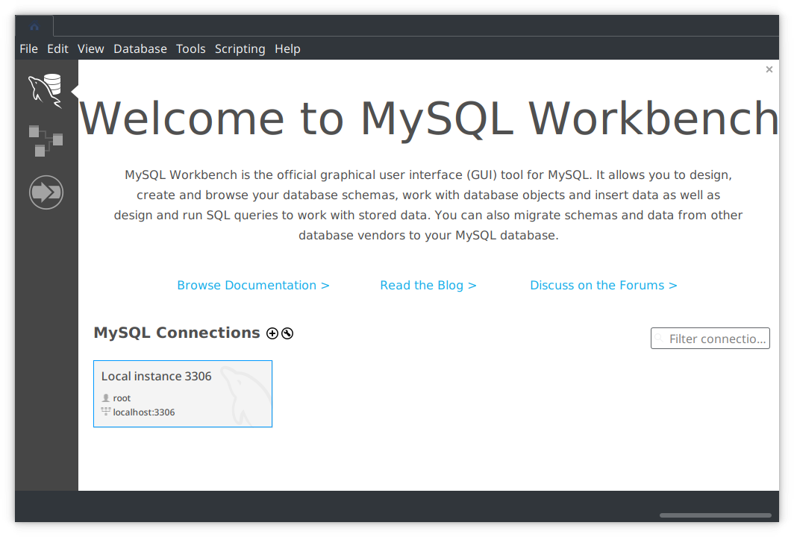

Cómo configurar correctamente el entorno MySQL Workbench.
Descargar e importar una base de datos.
MySQL Workbench es un entorno que permite trabajar con bases de datos MySQL y ejecutar consultas. Te recomendamos que lo instales para seguir el curso de forma práctica.
Para ello, abre el gestor de software de tu ordenador y busca «MySQL Workbench». Selecciónalo y pulsa en instalar. Cuando finalice el proceso, ábrelo y debe mostrar una ventana similar a esta:

Debes instalar y configurar el servidor MySQL por separado. En un ordenador con Debian o derivados, ejecuta el siguiente comando en la consola:
sudo apt install mariadb-server
Abre MySQL Workbench.
El servidor de la base de datos debería haber sido detectado automáticamente. Si no, sigue estos pasos:
Pulsa en File -> Connect to Database.
Haz clic en OK.
A partir de ahora, solo es necesario que hagas clic en la lista de conexiones de la pantalla de bienvenida.